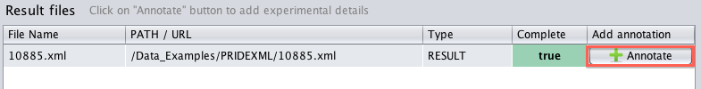
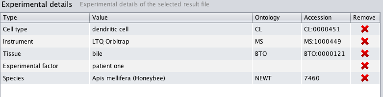

How to annotate experimental details?
This panel contains two main tables, the top table lists all the result files in your submission. It is mandatory to annotate each file.
You can add experimental details by clicking the "Annotate" button, as highlighted below:

A dialog will popup to allow you to select different experimental details, such as: species and
tissues.
 .
.
Once you have selected your experimental details, the "Experimental details" table will display the
choices you have made:
